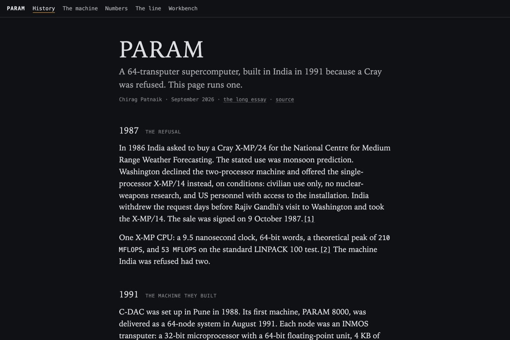
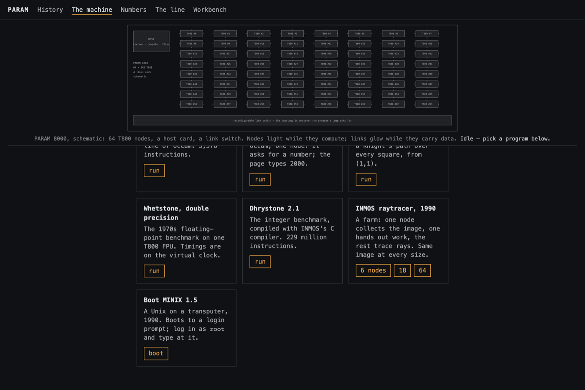
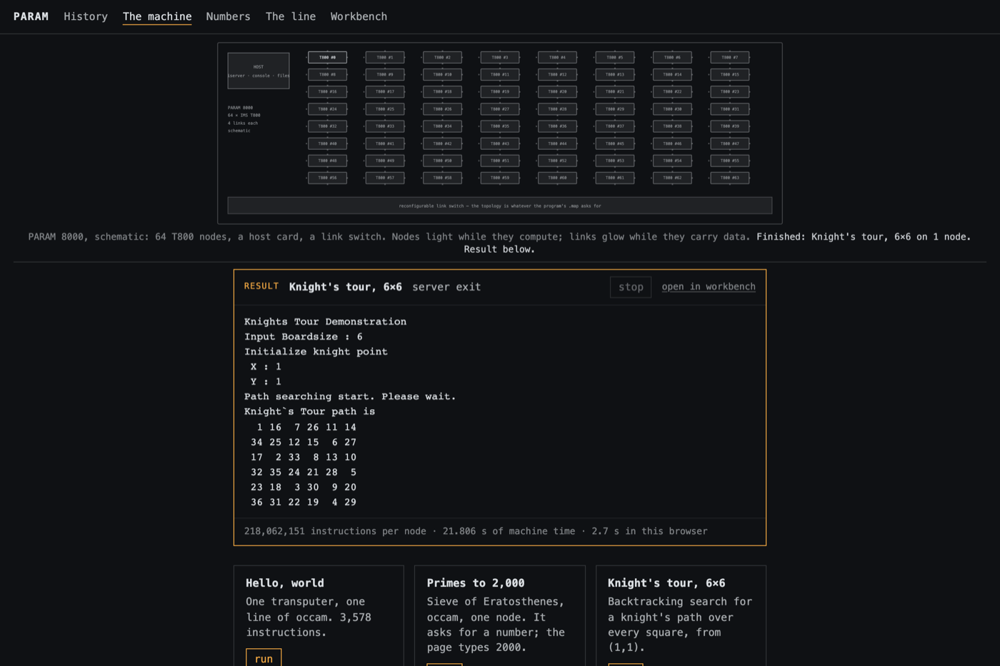
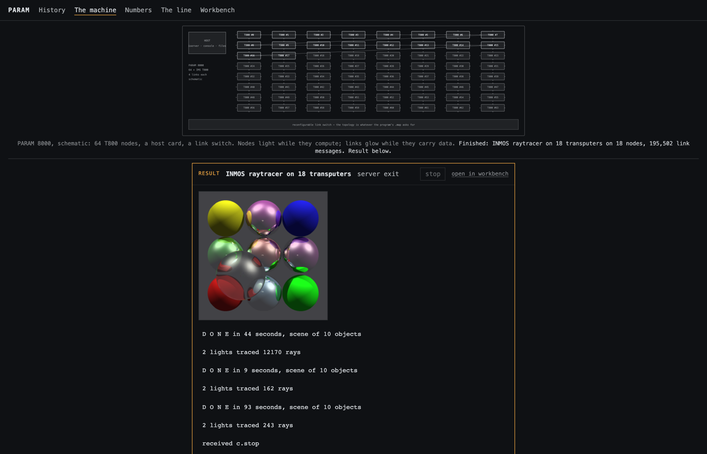
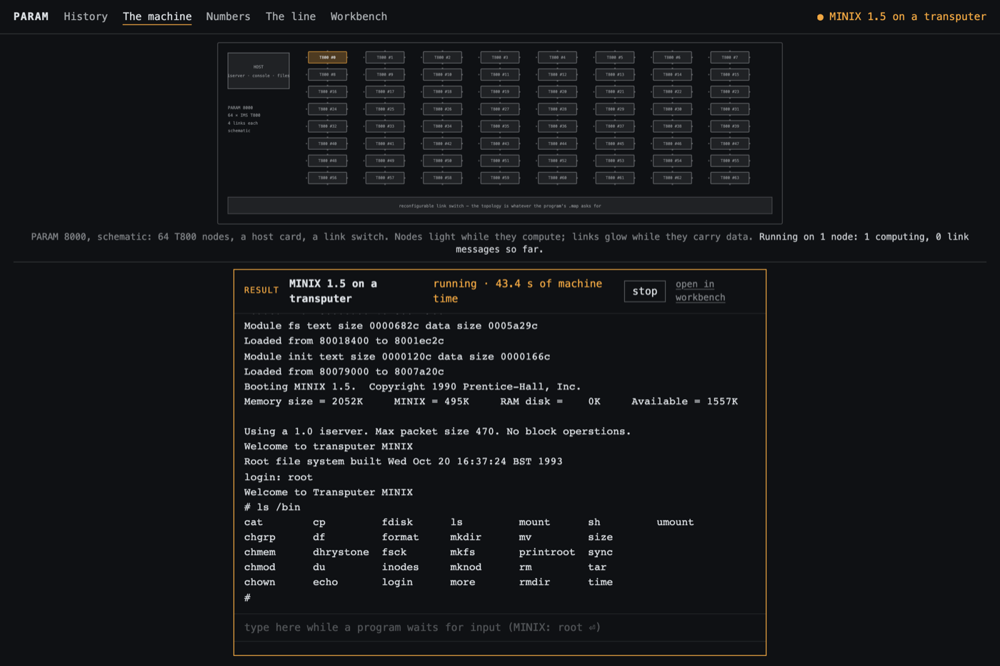
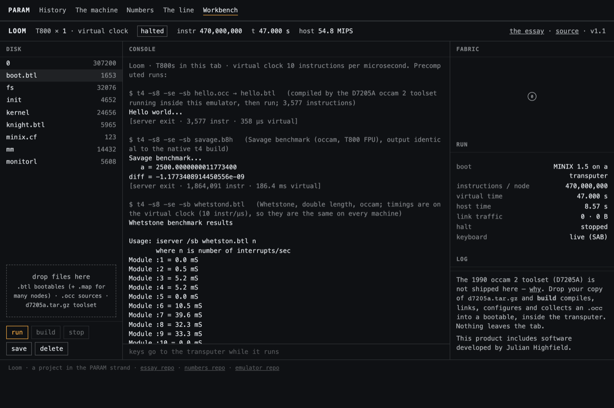

In 1986 India asked to buy a Cray X-MP/24 for the National Centre for Medium Range Weather Forecasting. The stated use was monsoon prediction. Washington declined the two-processor machine and offered the single-processor X-MP/14 instead, on conditions: civilian use only, no nuclear-weapons research, and US personnel with access to the installation. India withdrew the request days before Rajiv Gandhi's visit to Washington and took the X-MP/14. The sale was signed on 9 October 1987.[1]
One X-MP CPU: a 9.5 nanosecond clock, 64-bit words, a theoretical peak of 210 MFLOPS, and 53 MFLOPS on the standard LINPACK 100 test.[2] The machine India was refused had two.
1991 THE MACHINE THEY BUILT
C-DAC was set up in Pune in 1988. Its first machine, PARAM 8000, was delivered as a 64-node system in August 1991. Each node was an INMOS transputer: a 32-bit microprocessor with a 64-bit floating-point unit, 4 KB of memory and four serial links on one chip, designed to be wired to other transputers and programmed in occam, a language where processes talk only through channels. PARAM wired 64 of them through a reconfigurable switch, so the topology was whatever the program asked for.[3]
A single 20 MHz T800 managed 0.37 MFLOPS on LINPACK 100 in double precision, per Dongarra's table; INMOS quoted 1.5 MFLOPS on Livermore Loop 7 in single precision.[4] Sixty-four of them, if none ever waited for another, would reach about 24 MFLOPS on that test — less than half of one Cray CPU. C-DAC's own figure for a 256-node machine was 1 GFLOPS theoretical and 100 to 200 MFLOPS sustained.[5] The machine sold anyway, at around $350,000, to buyers that included Germany, the United Kingdom and Russia.[6]
These are the numbers, FP64 unless marked, from published period tables and from this laptop (Apple M4 Pro) running the same reference kernels under the same rules. Every cell is either measured here, published with a citation, or reconstructed and labelled. Method and sources: param-fp64.
One M4 Pro core against one T800-20 on LINPACK 100 is a factor of about forty-two thousand; against one X-MP/14se CPU, about three hundred.
Every performance threshold the US has written into computer export controls since 1992, converted to FP64, against the fastest FP64 box a person could buy that year. India is on the chart twice. The conversion is a device and the essay says so before drawing it; the short version is that the consumer shelf stopped climbing in FP64 around 2019, and in the unit the 2022 chip rules use, a gaming card was over the line before the line was drawn.
PARAM 8000, schematic: 64 T800 nodes, a host card, a link switch. Nodes light while they compute; links glow while they carry data. Idle — pick a program below.
The machine PARAM 8000 · EMULATED
Sixty-four INMOS T800s, each emulated by t4 compiled to WebAssembly in its own Worker, run in lockstep on one virtual clock at ten instructions per microsecond. Time on this machine is the same on every computer that opens the page, and every run produces the same bytes. The programs are real transputer binaries from the period, most produced by INMOS's 1990 occam toolset.
1 pick a program below 2 the machine above lights up while it runs 3 the result appears here, under the machine. Small programs finish in a blink; the raytracer and MINIX run for a while.
One transputer, one line of occam. 3,578 instructions.
Primes to 2,000
Sieve of Eratosthenes, occam, one node. It asks for a number; the page types 2000.
Knight's tour, 6×6
Backtracking search for a knight's path over every square, from (1,1).
Whetstone, double precision
The 1970s floating-point benchmark on one T800 FPU. Timings are on the virtual clock.
Dhrystone 2.1
The integer benchmark, compiled with INMOS's C compiler. 229 million instructions.
INMOS raytracer, 1990
A farm: one node collects the image, one hands out work, the rest trace rays. Same image at every size.
Boot MINIX 1.5
A Unix on a transputer, 1990. Boots to a login prompt; log in as root and type at it.
Guide WHAT THIS IS AND HOW TO USE IT
This page is a working model of PARAM 8000, the 64-transputer supercomputer C-DAC built in India in 1991 after the United States refused to sell India a Cray. Everything runs inside your browser tab: nothing is uploaded, no account, no server doing the work. The five tabs are meant to be read in order, but each stands on its own.
The tabs
History — two short sections: the 1987 refusal and the 1991 machine. Every figure carries a numbered source; the numbers link into the long essay.
The machine — the emulation. A schematic of the 64 nodes at the top, seven programs to run, and the result of whatever you ran.
Numbers — one table: how fast a T800, a PARAM, a Cray CPU and a 2024 laptop core are on the same reference tests, in the same arithmetic. Measured cells were run for this site; published ones are cited; one is reconstructed and says so.
The line — a chart of every US computer export-control threshold since 1992 against what a person could buy that year. India is on it twice.
Workbench — the instrument underneath: a disk, a console, the fabric view, and a build button for people who bring their own transputer programs.

History. Read this first if the name PARAM means nothing to you yet.
Running a program
Go to The machine. The schematic at the top is a diagram, not a photograph: sixty-four T800 chips, a host card on the left, the link switch along the bottom. It stays in view while you scroll. Under it are seven cards. Click a button on a card and three things happen:
The machine boots the program onto as many nodes as it needs — one for most, six to sixty-four for the raytracer. The caption under the schematic tells you what is happening.
Nodes that are computing light up; links carrying data glow. Small programs finish in a blink and you will only see the finished state. The raytracer and MINIX run long enough to watch.
The result appears in the box directly under the schematic: the program's output, a picture if it made one, and a line of numbers.

The cards. Nothing to install or upload; the programs are on the page.

A finished run. The status says server exit, which is the transputer's way of saying the program ended normally.
What each program does, and how long it takes
Hello, world — one line, 3,578 instructions, instant. Proof that the machine is real.
Primes to 2,000 — a sieve in occam. The program asks for a number; the page types 2000 for you. About a second of machine time.
Knight's tour, 6×6 — a backtracking search; prints the board with the move numbers. Around 22 seconds of machine time, a few seconds of yours.
Whetstone, double precision — the classic floating-point benchmark on the T800's FPU. Prints per-module timings and a KWhetstones figure; those times are on the machine's own clock and will be identical every run.
Dhrystone 2.1 — the integer benchmark, compiled with INMOS's C compiler. 229 million instructions; a few seconds in your browser.
INMOS raytracer, 1990 — a processor farm: node 0 assembles the image, node 1 hands out work, the rest trace rays. Pick 6, 18 or 64 nodes. Expect roughly 30 seconds to a couple of minutes depending on your computer; the image is the same at every size, byte for byte. The output scrolls with patch messages while it works; the picture appears at the end.
Boot MINIX 1.5 — a small Unix from 1990 booting on one transputer. It stops at login:. Type root in the box under the output and press Enter, then try ls /bin, cat /etc/passwd, dhrystone. It runs until you press stop.

The raytracer on 18 nodes, finished: 195,502 messages passed over the links to make this picture.

MINIX, logged in as root. The box at the bottom of the result is the keyboard.
Machine time and your time
Every emulated transputer runs on a virtual clock: ten instructions per microsecond, about what a 20 MHz T800 managed. The result line reports both — machine time is how long the program took on the emulated PARAM; the seconds "in this browser" are how long your computer took to emulate it. Machine time is the same on every computer that opens this page, which is why two runs of the same program give the same numbers and the same bytes. The emulation does not model exact cycle timing; it models the instruction set, the FPU, the links and the scheduler.
The workbench
Everything the cards do, without the guard rails. Drop a transputer bootable (.btl) on the disk and press run; if a .map from the INMOS configurer sits beside it, the fabric wires up that many nodes to match. Drop an occam source (.occ) together with your own copy of the INMOS D7205A toolset and build compiles it — the compiler itself runs inside the emulated transputer, which is how these programs were built in 1990. The toolset is not shipped on this site; the reason is in the repository. Files you make can be saved back to your computer; nothing leaves the tab.

The workbench: disk, console, fabric view.
Limits, stated plainly
Not cycle-accurate. Instruction counts and link traffic are exact for the emulated program; nanoseconds are not modelled.
The 64-node runs want a real computer. On a phone, stay at 6.
A program waiting for input holds the machine until you type or press stop.
Directed rounding modes (the T800's fprz, fprp, fprm) are implemented in software for WebAssembly; the raytracer's output matches the native build bit for bit, which is the test that caught this.
Built on pahihu's t4 emulator, Julian Highfield's original work, and INMOS's own software. Source for everything on this page: NakliTechie/loom. This product includes software developed by Julian Highfield.
drop files here .btl bootables (+ .map for many nodes) · .occ sources · d7205a.tar.gz toolset
CONSOLE
FABRIC
RUN
boot
—
instructions / node
—
virtual time
—
host time
—
link traffic
—
halt
—
keyboard
—
LOG
The 1990 occam 2 toolset (D7205A) is not shipped here — why. Drop your copy of d7205a.tar.gz and build compiles, links, configures and collects an .occ into a bootable, inside the transputer. Nothing leaves the tab.
This product includes software developed by Julian Highfield.